原流程与 v2
固定五对图，逐视角对照
左侧是原实验保存的完整结果，右侧是本次重新拟合的 v2。两侧使用相同渲染方式；点击图片打开原分辨率查看。
探索结果：使用历史固定外参，未证明该外参在本序列准确；旧两对约有 0.10 秒时间差。二维误差与三角化一致性都不等于真实三维精度，不能只据数值下降判断采用。
全部原有效点的误差
原流程 → v2；单位 px。身体按视角、手按侧别与视角先计算 RMSE，再取平均。下方逐图同时列出筛选后误差。
| 样本 | 身体 | 手部 |
|---|---|---|
| 全部五对 | 47.6 → 61.5 | 15.0 → 16.7 |
| 新三对：有手部三角化 | 57.6 → 64.9 | 10.6 → 8.9 |
| 旧两对：无手部三角化 | 32.6 → 56.4 | 25.4 → 35.4 |
29.0 秒 · 新样本 001
两目时间差 0.233 ms双目手点有效；外参仍未经本序列验证。
cam3
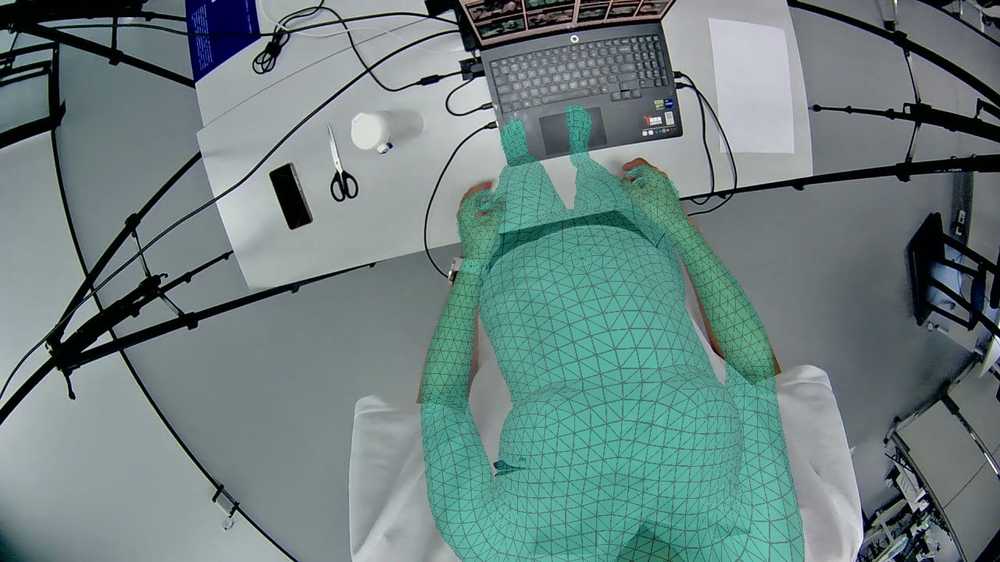

| 部位 | 原流程 | v2 | 评测点数 |
|---|---|---|---|
| 身体（原全部点） | 74.8 | 69.5 | 13 点 |
| 身体（v2 保留点） | 74.2 | 29.1 | 11 点 |
| 左手（原全部点） | 9.6 | 8.6 | 21 点 |
| 左手（v2 保留点） | 9.6 | 8.6 | 21 点 |
| 右手（原全部点） | 11.6 | 9.9 | 21 点 |
| 右手（v2 保留点） | 11.6 | 9.9 | 21 点 |
三维一致性与接缝检查
左手局部相交面配对：3 → 3；三角化腕点差：7.6 → 4.5 cm。
右手局部相交面配对：4 → 4；三角化腕点差：8.8 → 1.3 cm。
本目满足“前方且入画”的头顶点：0 → 391。此计数不考虑遮挡。
局部检查不覆盖共面接触或整身自交；三角化腕点差是拟合目标的一致性，不是真值误差。
cam4
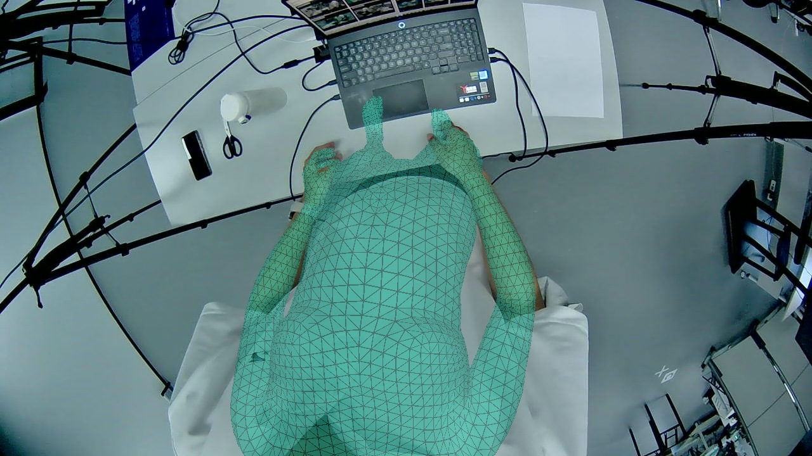
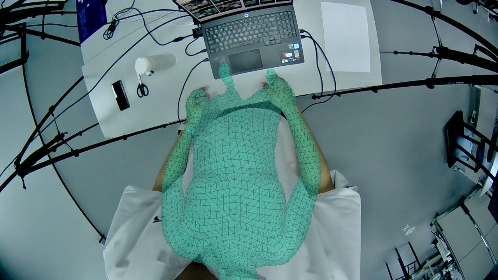
| 部位 | 原流程 | v2 | 评测点数 |
|---|---|---|---|
| 身体（原全部点） | 77.6 | 68.3 | 13 点 |
| 身体（v2 保留点） | 76.0 | 45.1 | 11 点 |
| 左手（原全部点） | 8.5 | 6.1 | 21 点 |
| 左手（v2 保留点） | 8.5 | 6.1 | 21 点 |
| 右手（原全部点） | 10.8 | 9.0 | 21 点 |
| 右手（v2 保留点） | 10.8 | 9.0 | 21 点 |
三维一致性与接缝检查
左手局部相交面配对：101 → 5；三角化腕点差：7.5 → 3.1 cm。
右手局部相交面配对：5 → 5；三角化腕点差：3.0 → 4.6 cm。
本目满足“前方且入画”的头顶点：0 → 1。此计数不考虑遮挡。
局部检查不覆盖共面接触或整身自交；三角化腕点差是拟合目标的一致性，不是真值误差。
31.1 秒 · 新样本 022
两目时间差 0.067 ms双目手点有效；外参仍未经本序列验证。
cam3

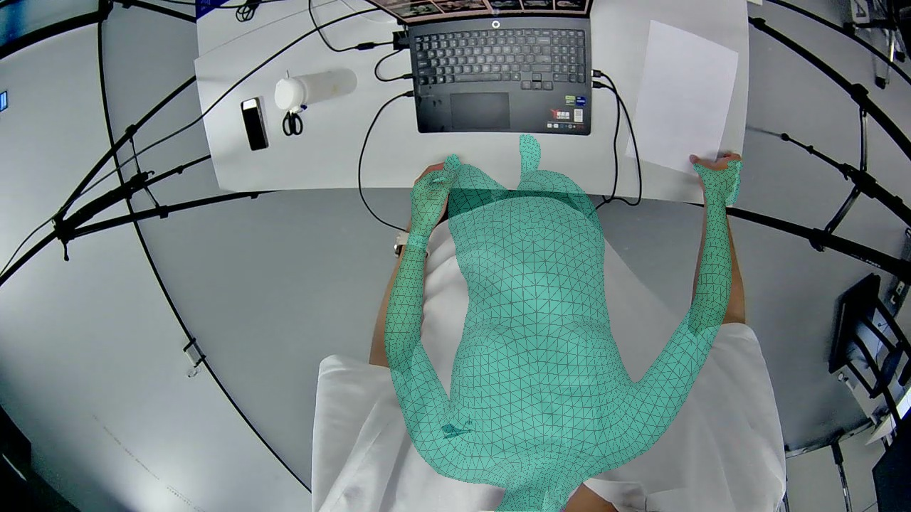
| 部位 | 原流程 | v2 | 评测点数 |
|---|---|---|---|
| 身体（原全部点） | 38.2 | 64.5 | 12 点 |
| 身体（v2 保留点） | 31.9 | 56.5 | 11 点 |
| 左手（原全部点） | 9.7 | 9.8 | 21 点 |
| 左手（v2 保留点） | 9.7 | 9.8 | 21 点 |
| 右手（原全部点） | 6.0 | 10.6 | 21 点 |
| 右手（v2 保留点） | 6.0 | 10.6 | 21 点 |
三维一致性与接缝检查
左手局部相交面配对：32 → 3；三角化腕点差：2.5 → 4.5 cm。
右手局部相交面配对：0 → 0；三角化腕点差：3.1 → 5.1 cm。
本目满足“前方且入画”的头顶点：0 → 6。此计数不考虑遮挡。
局部检查不覆盖共面接触或整身自交；三角化腕点差是拟合目标的一致性，不是真值误差。
cam4
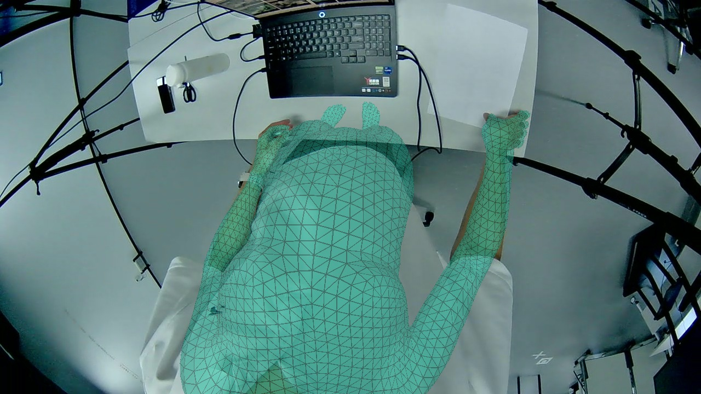
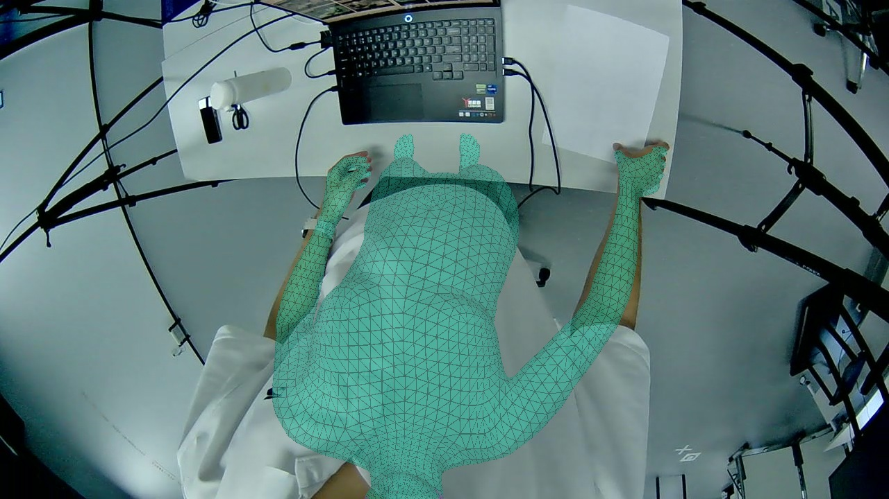
| 部位 | 原流程 | v2 | 评测点数 |
|---|---|---|---|
| 身体（原全部点） | 33.7 | 62.0 | 12 点 |
| 身体（v2 保留点） | 12.8 | 19.1 | 10 点 |
| 左手（原全部点） | 8.7 | 5.7 | 21 点 |
| 左手（v2 保留点） | 8.7 | 5.7 | 21 点 |
| 右手（原全部点） | 6.5 | 8.8 | 21 点 |
| 右手（v2 保留点） | 6.5 | 8.8 | 21 点 |
三维一致性与接缝检查
左手局部相交面配对：110 → 7；三角化腕点差：4.3 → 3.7 cm。
右手局部相交面配对：16 → 0；三角化腕点差：21.4 → 2.7 cm。
本目满足“前方且入画”的头顶点：0 → 6。此计数不考虑遮挡。
局部检查不覆盖共面接触或整身自交；三角化腕点差是拟合目标的一致性，不是真值误差。
38.9 秒 · 新样本 100
两目时间差 -0.117 ms双目手点有效；外参仍未经本序列验证。
cam3

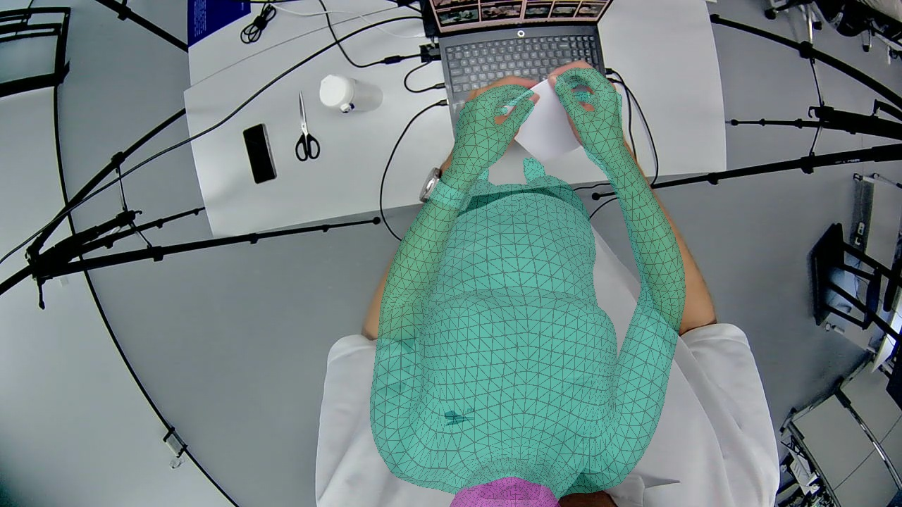
| 部位 | 原流程 | v2 | 评测点数 |
|---|---|---|---|
| 身体（原全部点） | 65.9 | 69.9 | 13 点 |
| 身体（v2 保留点） | 67.4 | 43.2 | 11 点 |
| 左手（原全部点） | 14.1 | 10.1 | 21 点 |
| 左手（v2 保留点） | 14.1 | 10.1 | 21 点 |
| 右手（原全部点） | 14.1 | 9.4 | 21 点 |
| 右手（v2 保留点） | 14.1 | 9.4 | 21 点 |
三维一致性与接缝检查
左手局部相交面配对：6 → 6；三角化腕点差：2.1 → 1.2 cm。
右手局部相交面配对：0 → 0；三角化腕点差：1.1 → 0.8 cm。
本目满足“前方且入画”的头顶点：0 → 599。此计数不考虑遮挡。
局部检查不覆盖共面接触或整身自交；三角化腕点差是拟合目标的一致性，不是真值误差。
cam4
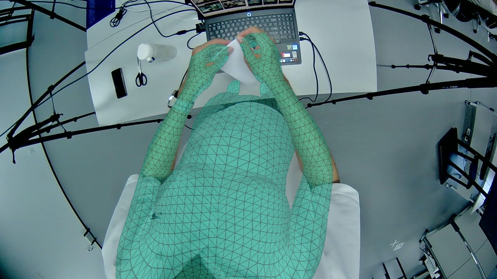
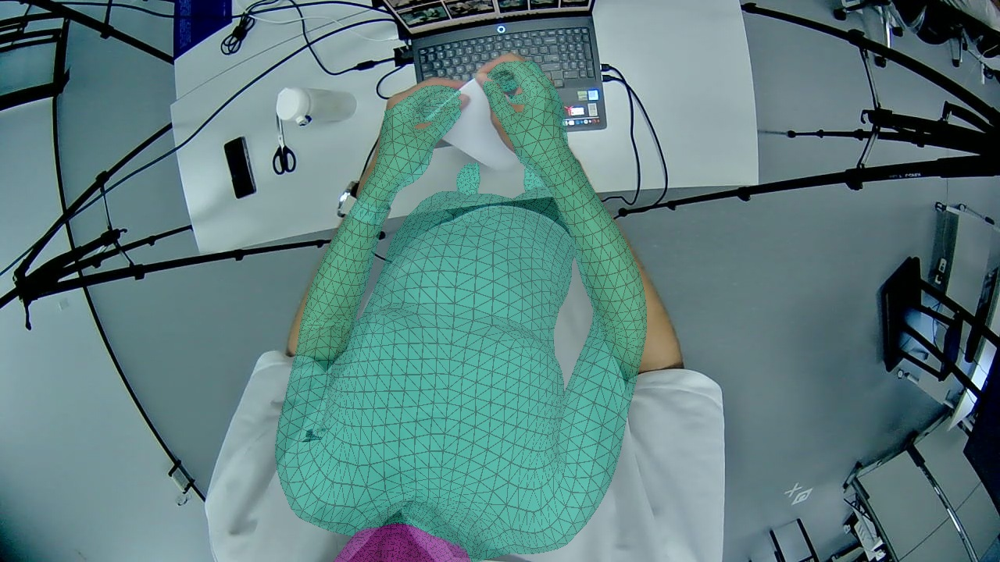
| 部位 | 原流程 | v2 | 评测点数 |
|---|---|---|---|
| 身体（原全部点） | 55.6 | 55.3 | 13 点 |
| 身体（v2 保留点） | 54.4 | 34.1 | 11 点 |
| 左手（原全部点） | 14.0 | 9.6 | 21 点 |
| 左手（v2 保留点） | 14.0 | 9.6 | 21 点 |
| 右手（原全部点） | 14.0 | 8.7 | 21 点 |
| 右手（v2 保留点） | 14.0 | 8.7 | 21 点 |
三维一致性与接缝检查
左手局部相交面配对：6 → 6；三角化腕点差：2.6 → 1.2 cm。
右手局部相交面配对：0 → 0；三角化腕点差：1.4 → 1.7 cm。
本目满足“前方且入画”的头顶点：0 → 606。此计数不考虑遮挡。
局部检查不覆盖共面接触或整身自交；三角化腕点差是拟合目标的一致性，不是真值误差。
旧样本 11
两目时间差 100.733 ms缺检 / 身份冲突使双目手部 3D 不可用；仍运行并展示全部结果。
cam3
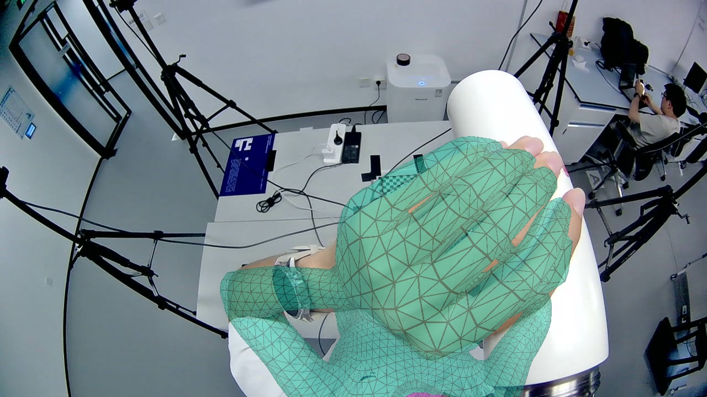
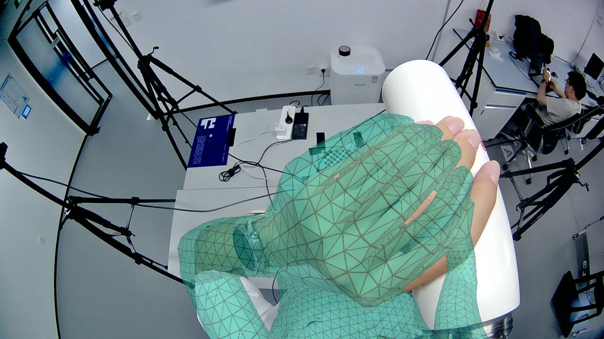
| 部位 | 原流程 | v2 | 评测点数 |
|---|---|---|---|
| 身体（原全部点） | 37.2 | 86.7 | 7 点 |
| 身体（v2 保留点） | 30.2 | 18.7 | 5 点 |
| 左手（原全部点） | 23.9 | 46.8 | 21 点 |
| 左手（v2 保留点） | 23.9 | 46.8 | 21 点 |
| 右手（原全部点） | — | — | 0 点 |
| 右手（v2 保留点） | — | — | 0 点 |
三维一致性与接缝检查
左手局部相交面配对：0 → 0；三角化腕点差：— → — cm。
右手局部相交面配对：— → —；三角化腕点差：— → — cm。
本目满足“前方且入画”的头顶点：111 → 0。此计数不考虑遮挡。
局部检查不覆盖共面接触或整身自交；三角化腕点差是拟合目标的一致性，不是真值误差。
cam4
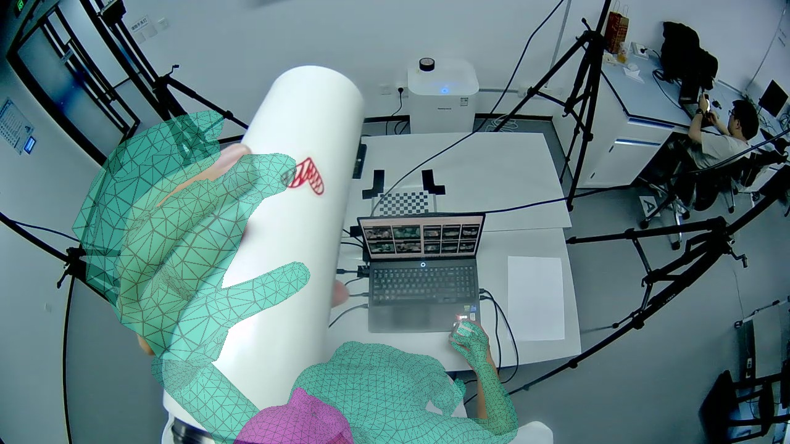
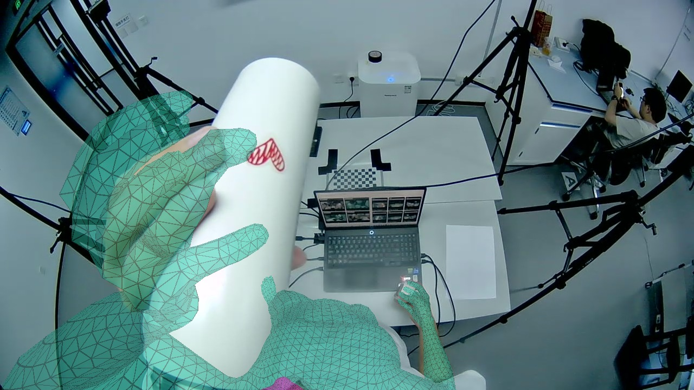
| 部位 | 原流程 | v2 | 评测点数 |
|---|---|---|---|
| 身体（原全部点） | 28.5 | 30.0 | 5 点 |
| 身体（v2 保留点） | 31.9 | 30.1 | 4 点 |
| 左手（原全部点） | 72.0 | 85.3 | 21 点 |
| 左手（v2 保留点） | 72.0 | 85.3 | 21 点 |
| 右手（原全部点） | 4.2 | 4.3 | 21 点 |
| 右手（v2 保留点） | 4.2 | 4.3 | 21 点 |
三维一致性与接缝检查
左手局部相交面配对：32 → 33；三角化腕点差：— → — cm。
右手局部相交面配对：8 → 0；三角化腕点差：— → — cm。
本目满足“前方且入画”的头顶点：1771 → 359。此计数不考虑遮挡。
局部检查不覆盖共面接触或整身自交；三角化腕点差是拟合目标的一致性，不是真值误差。
旧样本 12
两目时间差 100.550 ms缺检 / 身份冲突使双目手部 3D 不可用；仍运行并展示全部结果。
cam3


| 部位 | 原流程 | v2 | 评测点数 |
|---|---|---|---|
| 身体（原全部点） | 43.0 | 81.3 | 7 点 |
| 身体（v2 保留点） | 25.4 | 16.7 | 5 点 |
| 左手（原全部点） | 22.3 | 34.9 | 21 点 |
| 左手（v2 保留点） | 22.3 | 34.9 | 21 点 |
| 右手（原全部点） | — | — | 0 点 |
| 右手（v2 保留点） | — | — | 0 点 |
三维一致性与接缝检查
左手局部相交面配对：0 → 0；三角化腕点差：— → — cm。
右手局部相交面配对：— → —；三角化腕点差：— → — cm。
本目满足“前方且入画”的头顶点：0 → 0。此计数不考虑遮挡。
局部检查不覆盖共面接触或整身自交；三角化腕点差是拟合目标的一致性，不是真值误差。
cam4

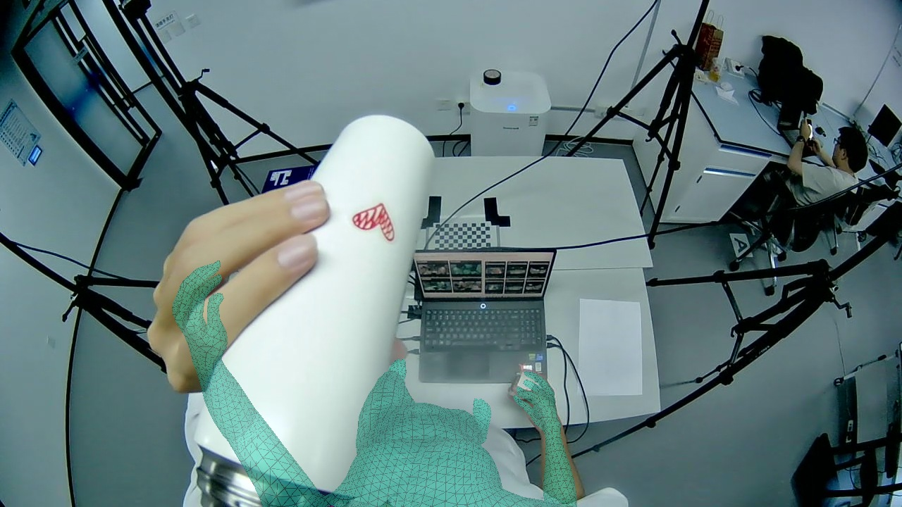
| 部位 | 原流程 | v2 | 评测点数 |
|---|---|---|---|
| 身体（原全部点） | 21.6 | 27.7 | 5 点 |
| 身体（v2 保留点） | 23.9 | 26.5 | 4 点 |
| 左手（原全部点） | — | — | 0 点 |
| 左手（v2 保留点） | — | — | 0 点 |
| 右手（原全部点） | 4.5 | 5.9 | 21 点 |
| 右手（v2 保留点） | 4.5 | 5.9 | 21 点 |
三维一致性与接缝检查
左手局部相交面配对：— → —；三角化腕点差：— → — cm。
右手局部相交面配对：5 → 5；三角化腕点差：— → — cm。
本目满足“前方且入画”的头顶点：2091 → 13。此计数不考虑遮挡。
局部检查不覆盖共面接触或整身自交；三角化腕点差是拟合目标的一致性，不是真值误差。
本次修改与比较口径
深度保护排除头颈；删除“腕到相机距离不得低于初始值 × 0.85”；加入 WiLoR 双目腕 / 手点三角化及各向异性不确定度；剔除边缘 40 px 内观测（髋、膝、踝、鼻仍按原规则）；加入两目头部入画软惩罚；按身体、腕、左右手及二维 / 三维分别归一化。
沿用原刚体 → 身体 → 腕点 → 轮廓 → MANO 辅助身体 → 原有界接缝顺序。每个视角独立拟合，共用转换到本目坐标的三角化观测；没有改成一份共享网格，没有新增 MANO 三维放置或腕朝向对齐阶段。保留原 head reference 0.1。
“原全部点”和“v2 保留点”均用同一份冻结自动观测分别评测两种结果，避免靠删除困难点造成表面改善。缺失项显示“—”。新样本 022 的 cam4 原结果包含历史手部恢复；本次沿用对应缓存和匹配。历史成品与当前重跑之间还可能存在历史实现差异，结果不能当作单因素消融。
网格渲染处理模型自身遮挡；不处理真实物体的遮挡。近相机或过长的投影三角形会被裁剪，两侧使用同一规则。